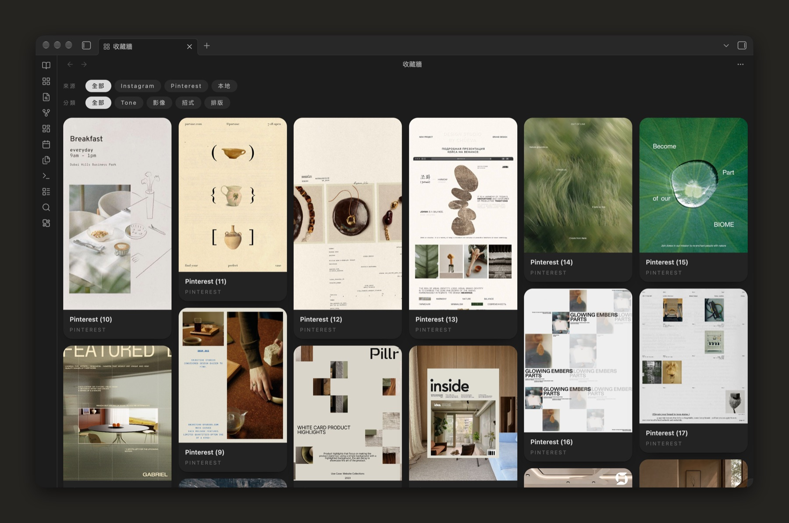
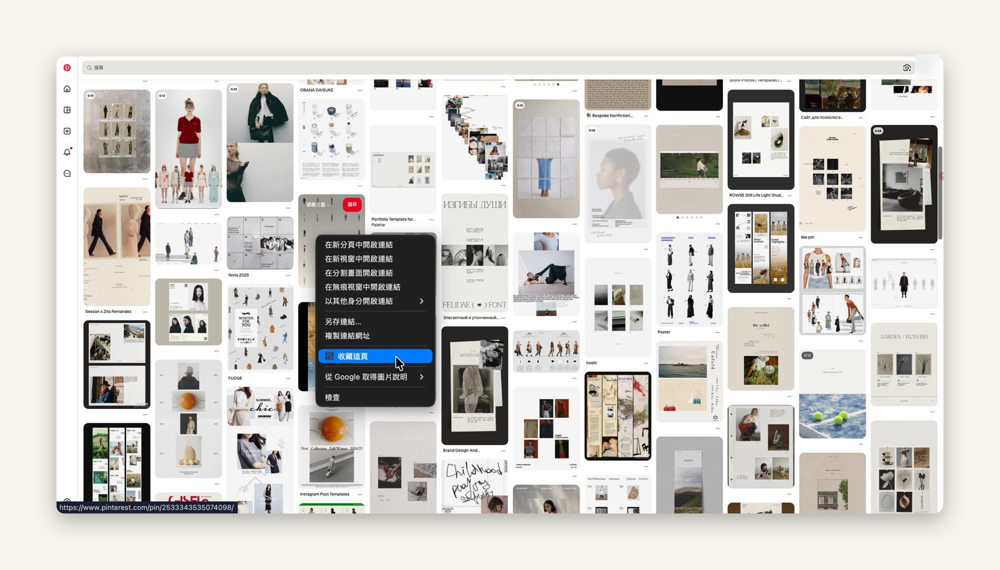

讓 Obsidian 也能是 Pinterest，收藏間

先講結論
Obsidian 可以當 Pinterest 用：每一則收藏就是一則普通筆記，加上一張存在本機的封面，外掛負責把它們排成一面牆。牆本身不難，難的是「從瀏覽器進到保管庫」這一段——macOS 會擋、網站會擋，而為了繞過去在電腦上開的那扇門，一開始沒管好誰能進來。
為什麼要做
我收的是排版、色調、鏡頭這類視覺參考。書籤只留得住網址，過幾個月點開常常已經失效；截圖會散在桌面；Pinterest 的收藏又跟我的筆記分在兩個地方。我想要的是：看到喜歡的，按一下右鍵，它就跟我的筆記住在一起，點一下分類就篩得出來。
- 一則收藏＝一則筆記：記網址、封面、分類，正文隨你寫。哪天不用這個外掛，筆記都還在。
- 封面一定存到本機：很多圖床網址帶簽章，幾天後就打不開。
- 右鍵點在圖上，那張就是封面；點在空白處就用網頁自己宣告的代表圖（og:image）。

從瀏覽器到保管庫：試過三條路
| 做法 | 結果 | 卡在哪 |
|---|---|---|
| 書籤小工具：在網頁裡直接連本機 | 不通 | Instagram、Pinterest 這類網站的安全政策（CSP）會擋掉頁面裡所有連本機的請求 |
| Chrome 擴充＋原生訊息主機：讓 Chrome 叫一支本機程式寫檔 | 不通 | macOS 的檔案權限（TCC）擋住，而且完全不跳詢問 |
| Chrome 擴充 → Obsidian 外掛開一扇本機的門 → 外掛幫忙寫檔 | 通 | 現在用的就是這條 |
最花時間的是第二條
macOS 對「沒有自己身分的程式」——Chrome 叫起來的小程式、排程跑的腳本——是直接拒絕，不跳視窗問你。它讀不到「下載」資料夾，也讀不到放在 iCloud 的整個 Obsidian 保管庫。系統設定的「檔案與檔案夾」裡不會出現它，重設權限也沒用。Chrome 那頭只說一句「Native host has exited」，記錄檔一行都沒有。
我們花了一個小時才發現原因：在保管庫外面放一支小程式先跑起來，才看到「Operation not permitted」。解法是換一個本來就有權限的程式當中繼：Obsidian 自己當然讀得到自己的保管庫，所以讓 Obsidian 外掛在電腦上開一扇只給本機用的門，Chrome 擴充把網址送過去，外掛再叫抓取程式去下載封面、寫筆記。
牆怎麼排
- 真瀑布流：欄寬固定，高度跟著圖片原比例，每張放進當下最矮的那一欄。
- 收藏時就記下圖片寬高：牆在圖片載入前就能排好，不會一邊載入一邊跳。
- Instagram 的封面要用 og:image 認：頁面上最大的那張圖，常常是下面推薦區別人的貼文。我們曾經因此整批抓錯，現在正確優先於解析度。
- 影片也能收：把影片拖進收藏筆記，自動抽一格有畫面的當封面（避開開頭黑畫面）。
- 選配 AI 分類：讓 AI 看封面幫忙歸類。打開才會把封面送到你自己選的模型服務，預設關。
我自己的牆現在 50 多張卡，分類跟收藏夾一樣可以一則掛好幾個。
開了門之後：我們自己查出的兩個漏洞
準備把這個工具分享出來時，我們先用「如果對方是壞人」的角度檢查了一遍，查出兩個洞。都已經修好，但值得講，因為會開本機門的工具很容易犯一樣的錯。
1. 門沒有看是誰在敲
外掛開的那扇門，原本對所有網頁都開放。你逛到任何一個網頁，它都能在背景往你的保管庫塞假收藏、叫你的電腦去下載它指定的網址、花掉你的 AI 額度。改法：只收自己那支擴充送來的請求，同時檢查請求是送到哪個主機名（防止有人把自己的網域指到你的電腦）。
2. 封面網址是網頁作者寫的
封面網址來自網頁自己的宣告，寫網頁的人可以填任何東西。如果填的是你電腦裡某個檔案的路徑，你一按「收藏這頁」，抓取程式就把那個檔案讀出來存進保管庫；填內網位址，就是叫你的電腦去敲家裡的路由器或 NAS。第 1 個洞補好了也擋不到這個，因為請求是經過你自己的擴充進來的。改法：只抓公開網站的 http／https 網址，連轉址的目標都要檢查。
為什麼這麼容易出錯
- 它是一座橋：一頭是陌生人的網頁，一頭是你的檔案。
- 預設值本來就不安全：Python 抓網址的工具預設連本機檔案都會讀；網路上常見的寫法是對所有網頁開門。
- 不安全不會報錯：功能測試只問「收得進來嗎」，收得進來就算過。
之後我們訂了一條規矩：任何會開本機門的工具，上線或分享之前都要逐條過一份安全清單。同一週順手檢查了另外兩支會開本機門的工具，也查到同類問題，一起修掉了。
想自己蓋一個
這個工具綁著我的電腦路徑和保管庫，原封不動給你也裝不起來。所以我開源的是施工圖：規格、施工順序、安全規則、三十二條踩過的坑、每一階段的驗收測試。整包丟給你的 AI（Claude Code、Codex、Cursor 都行），說「照著蓋」，它就蓋出你自己的那一版。
github.com/qwert2813434-ctrl/collection-wall（MIT 授權）
- 右鍵收藏端到端實測：2026.09.04（Pinterest、YouTube）
- macOS 權限行為：2026.09.04 實測（用排程程式模擬 Chrome 叫起的程式，讀「下載」與 iCloud 保管庫一律被拒）
- 兩個漏洞與修正：2026.10.01–02，修完用本機測試逐條驗過